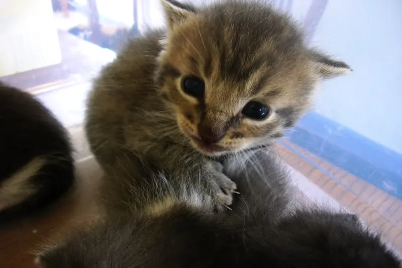
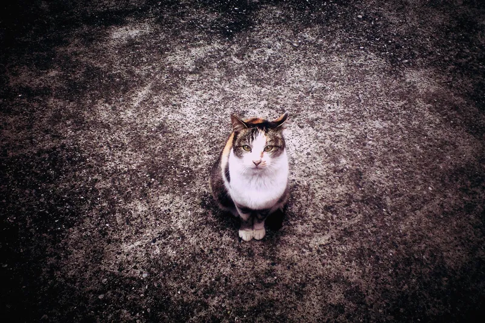
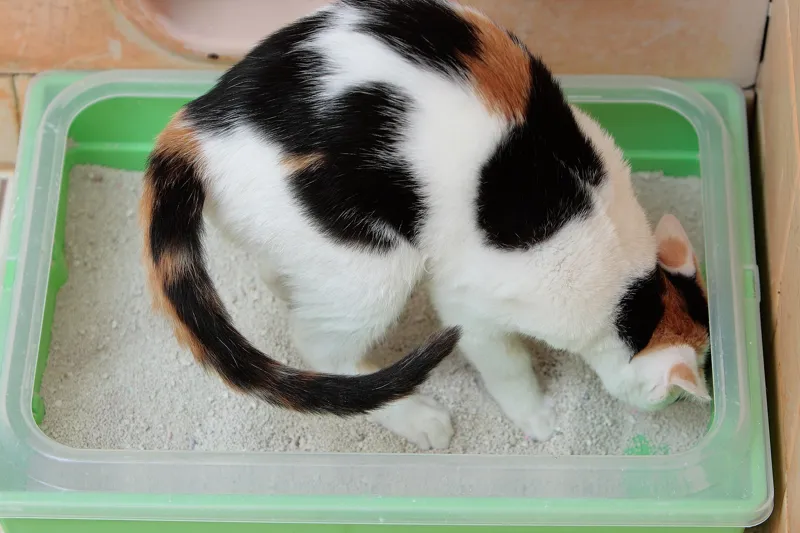
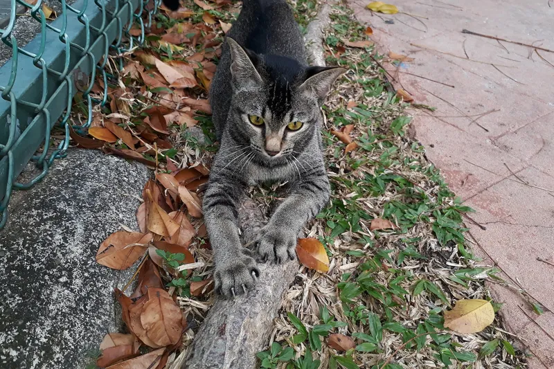

Cats
Plain cat care answers: lilies, chocolate, onions, milk, diarrhea, vomiting, not eating, itching, kneading and normal temperature. Each cites vet sources.

Questions
 CatAre lilies poisonous to cats?→
CatAre lilies poisonous to cats?→ CatCan cats drink milk?→
CatCan cats drink milk?→
CatCan cats eat chocolate?→
CatCan cats eat onions or garlic?→CatWhat is a normal temperature for a cat?→
CatWhy does my cat have diarrhea?→ CatWhy does my cat knead?→
CatWhy does my cat knead?→ CatWhy is my cat not eating?→
CatWhy is my cat not eating?→
CatWhy is my cat so itchy?→ CatWhy is my cat throwing up?→
CatWhy is my cat throwing up?→